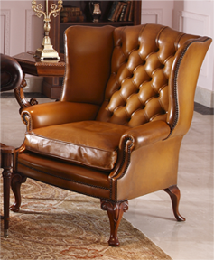

Hawkins Brothers
英国柯建斯沙发创立于1973年，至今已有四十多年历史。由一位叫Terrace Hawkins 创立。从开始到现在都在做同一类经典款Chesterfield （拉扣皮沙发）。这种风格由二次大战英国首相“邱吉尔”在他的办公室里开始用起的风格，一直流传至今。而国内在八年前开始流行此类风格。有各种生产家在复制，但怎样都无法达到原装的效果。工厂八位技术工年龄接近60岁，一生最辉煌的时间都是花在钻研这些家具上，所有Hawkins沙发的整体结构是用英国的毛榉樱木作为框架,再配上铜的花苔弹簧, 维持着30年代的原始精湛技术。
Hawkins沙发最特别的地方就是皮的颜色及仿古的味道，它是把整张沙发制作完毕后再整体上颜色，而上颜色的工匠是全手工擦上颜色上去的（Hand dyehide），故可令到皮的效果仿似一件艺术品，更能使到一张新的皮沙发飘着五十年代英国皇室气氛的古味，在当今市场是难得的产品，甚得到全世界向往英伦风格人士的使用，暂时Hawkins精湛技术做出来的沙发享用20-30年是绝无问题的。
